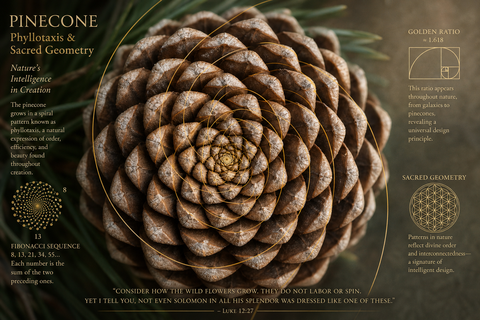
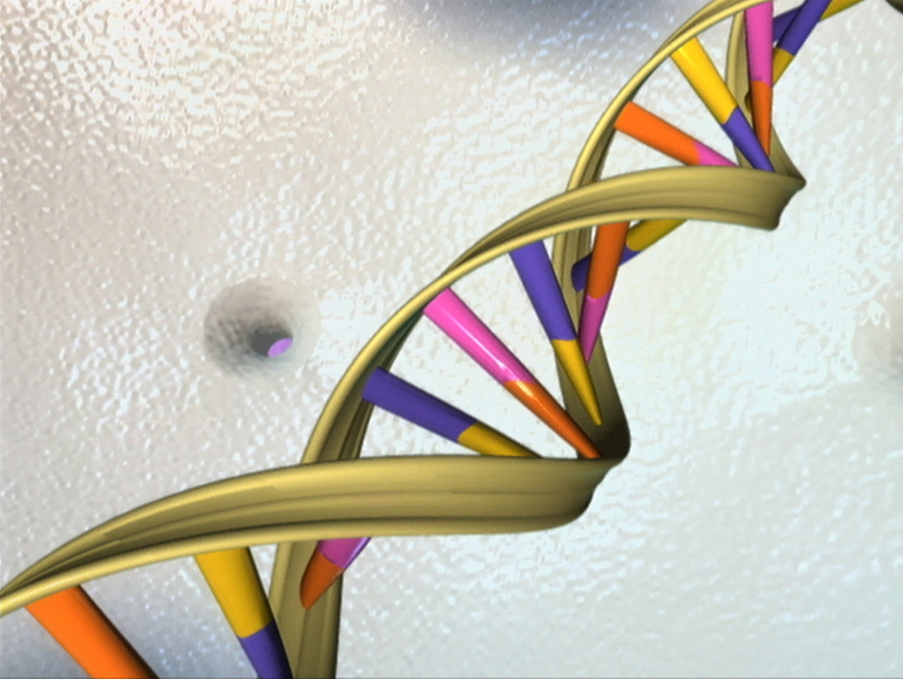
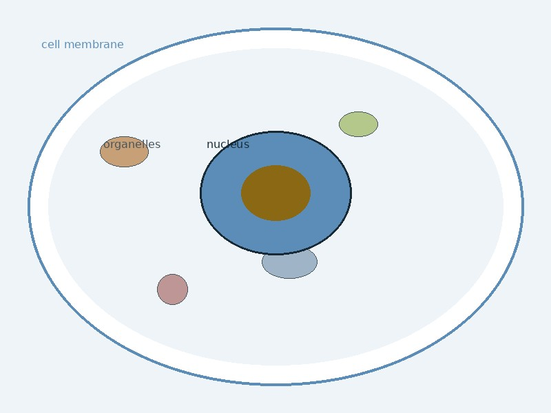
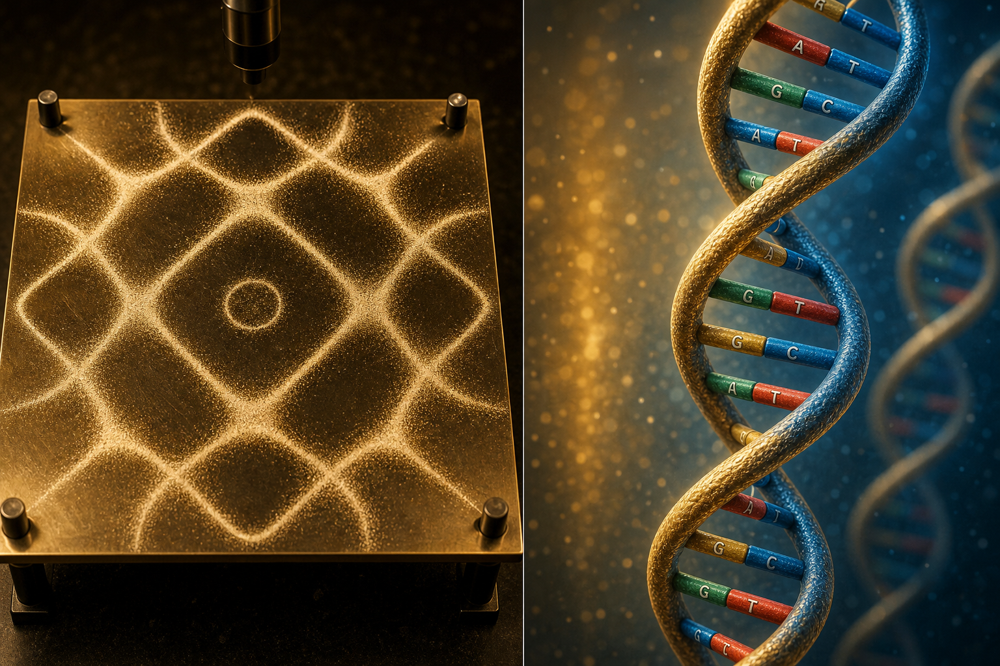
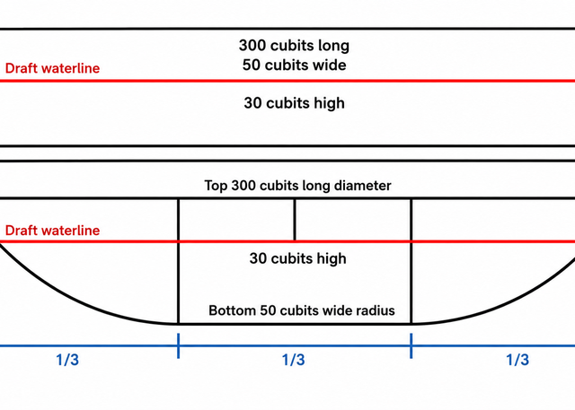
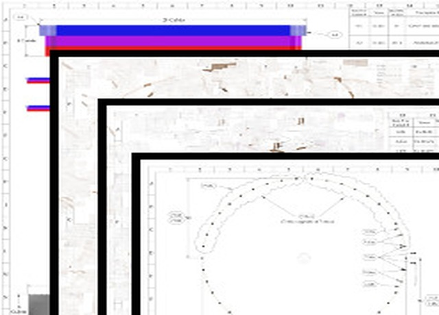
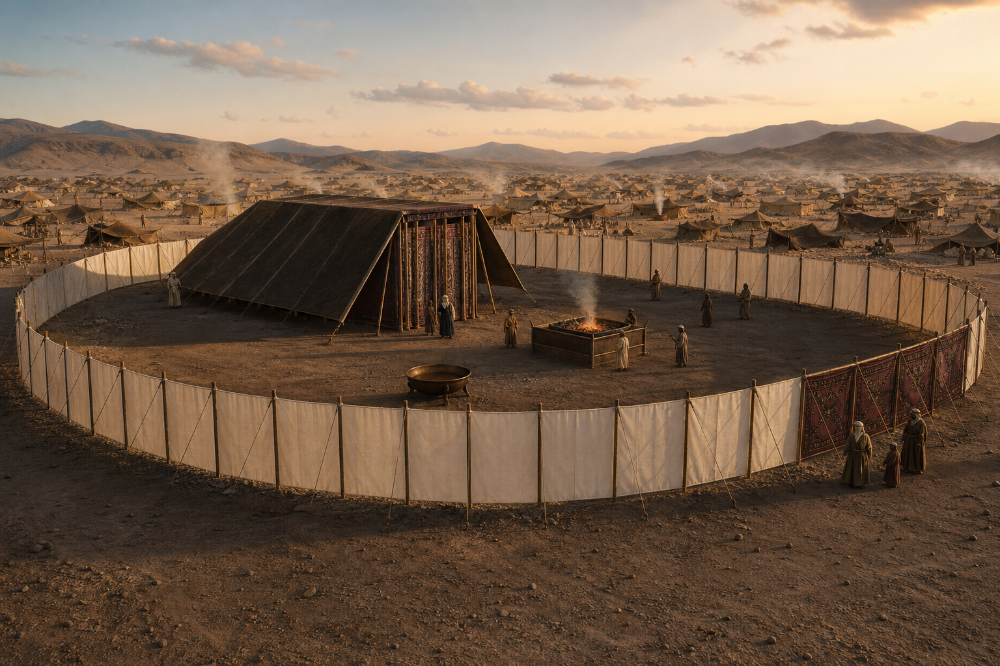
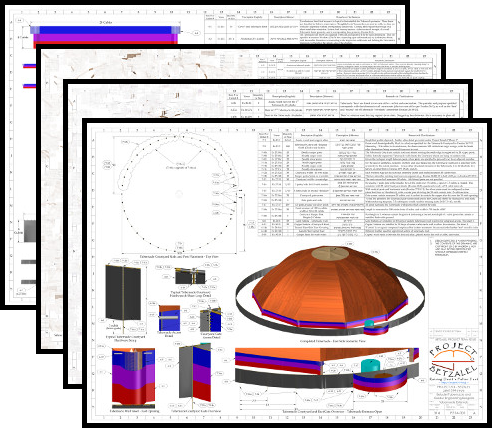
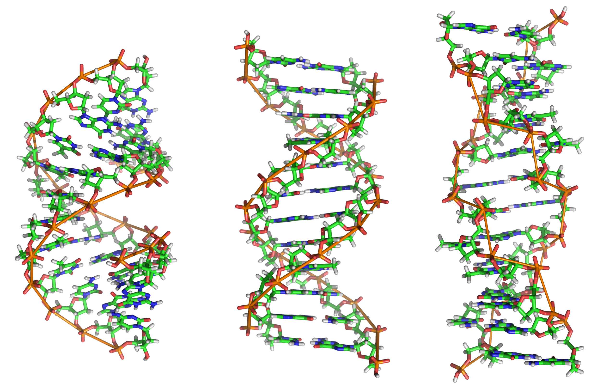

Everywhere we look in what God made, form speaks of intelligence. This study asks whether His saving structures were designed with the same mind, or whether religion handed us cardboard diagrams and called them holy.
What He made first
Creation carries geometry before we name it
A sunflower head does not consult a textbook before it packs seeds. The spiral follows Fibonacci because that packing solves a real problem: maximum seed in minimum space, with each new seed sitting where the gaps are widest. A pinecone scales the same phyllotaxis for strength and breath. A Barnsley fern repeats one affine rule at every scale, leaf within leaf, branch within branch, the same intelligence written smaller and smaller.
We did not invent pi in a laboratory and then paste it onto nature. Nature already used curvature, ratio, and symmetry long before Moses counted cubits. That is why this Study page exists. If the Creator's handprint is visible in every flower and every cell, we ought to read Exodus with the same expectation of form.

Sunflower spiral
Fibonacci packing: each seed finds the gap that least overlaps its neighbours. Circumference and ratio before commentary.

Pinecone
Phyllotaxis for strength and breath. Nature builds with pi before we label it.
Barnsley fern
One rule at every scale. Fractal self-similarity as signature of design.

Double helix
Life's text stored in a molecule whose axial symmetry peer-reviewed work now describes as decagonal.

Nested cell
Membrane, cytoplasm, guarded nucleus: rings inside rings, the same logic as court, holy place, and veil.

Cymatics
Sound shaping matter into standing waves. Worship and frequency are not abstractions in Scripture.

Frequency parallel
Praise at the dwelling and resonance in matter: pattern at more than one scale.
The inherited picture
Intelligent pattern, shoebox home
Here is the irony that keeps us awake. Commentaries, museum exhibits, and Sunday-school flannelgraphs show Moses' Tabernacle as a rectangular tent: flat walls, flat roof, furniture arranged like props in a shoe store display. Biblical scholars call it a dwelling. Children draw a box. The same tradition that praises God's wisdom in the stars hands Him a cardboard floor plan at Sinai.
Andrew Hoy at Project314 and Project Arc at Renformation did not start from that picture. They started from the Hebrew inventory in Exodus 26 and 27, joined the curtains the way the text specifies, and watched the math close. The court resolves as a circle. The dwelling resolves as a decagon dome. The shoebox was never in the specification. It was in the inheritance.
The Creator who engineered Fibonacci in a flower and ten-fold symmetry in the genome is not less creative at Sinai. We think the shoebox says more about our flattened imagination than about His pattern.

Inherited shoebox
Flat walls, flat roof
Rectangular exhibit models train the eye to expect a box at centre. Stress concentrates at corners. The court reads as a slab, not a measured circle.

Recovered pattern
Decagon dome, circular court
Ten roof panels, curved court perimeter, yurt-like dwelling sized for priestly service. The geometry closes when Exodus is engineered, not illustrated from tradition.
Same habit, different structure. Project Arc shows the shoebox instinct at Noah's ark as well: flat hull vs circumferential survival shell.
The habit repeats across Scripture's major structures. Noah's ark drawn as a wooden shoebox with bow and stern. Solomon's temple as a flat stone rectangle copied from post-exilic assumptions. New Jerusalem forced into grid plans that ignore Ezekiel's circumference language. In each case the promoted research on this site asks the same question: did God give plain boxes, or did we stop reading the measure?
Exodus 26–27
Pi encoded at Sinai
Project314's breakthrough was not a sermon illustration. It was inventory work. Eleven goat-hair sheets in Exodus 26, joined short-edge to short-edge exactly as the Hebrew describes, yield 314 cubits of joined width: π scaled to a hundred. The courtyard Moses measured as 100 cubits long and 50 cubits wide resolves as a circle when you read diameter and radius in context, not length and width as a flat rectangle.
Exodus does not say "here is pi." It gives dimensions that only close when you treat the court as circular and the curtain inventory as a continuous measure around that geometry. Andrew Hoy built physical models so the numbers are not abstract on a page.
We promote his work at God of Pi and at Project314.org because the recovered pattern changed how we read every other structure in Scripture.

314 cubits from the curtain inventory. Eleven sheets joined as Exodus specifies. The total width closes at π × 100 when the court is read as a circle, not a flat slab.2:22 Church · from Project314 research

Circular court, top view. The courtyard perimeter Project314 recovers from Exodus 27, with the decagon dwelling at centre.Andrew Hoy · Project314.org

Wilderness scale. The dwelling as a yurt-like decagon inside a measured court, not a cramped rectangular diorama.Project314 · Timna model photography
Ten at the axis
Decagon at the tent, decagon in the helix
Once the court is circular, the number ten keeps returning. Hoy's dwelling is a decagon: ten roof panels, ten structural stations around the ring when you look straight down. Numbers 2 arranges Israel around the dwelling at centre. That camp order fits a decagonal reading better than tribes pasted onto a flat rectangle as an afterthought.
Peer-reviewed work on B-DNA describes the same count when you look down the helix axis: ten base pairs per full turn, thirty-six degrees per step, π/5 radians, the angular language of pentagons and decagons. Mark Curtis proposed ten pentagons about a decagon as the only polygonal helix model that closes the published ratios without fudging. Stuart Larsen's 2021 paper in Symmetry tests the axial template independently and finds decagonal symmetry with approximations to φ through those same pentagon angles.

Look straight down. Left: Project314 decagon roof and Numbers 2 camp positions (~1400 BC). Right: B-DNA double helix in profile and axial decagon with ten base pairs per turn (Curtis 1997 · Larsen 2021).2:22 Church comparison figure

Tabernacle top view. Ten panels on the roof, ten named stations on the ring.

Larsen Figure 4. Axial cross-section, decagon template, overlay on the molecule (Symmetry 2021).

Ten-fold count. One full turn, ten steps, thirty-six degrees each. Same angular grammar at tent and genome.

Axial view. The downward perspective textbooks often skip.
Why ten matters
Tabernacle (~1400 BC): Decagon dwelling, ten roof panels, camp geometry in Numbers 2.
B-DNA (published measures): Ten base pairs per turn · 36° rotation per step · pitch ~34Å.
Golden angle: Pentagon core of each base · φ approximations in Larsen's three independent measures.
We do not claim Moses copied a laboratory photograph. We say the overlaps are too precise to ignore when Scripture, Project314, Curtis, and Larsen are read together.
One pattern, three scales
Wilderness, genome, and body
Hebrews 8:5 names the earthly Tabernacle a shadow of heavenly things. Yeshua calls His body the temple. Paul does not say your body resembles a temple. He says it is the temple of the Holy Spirit. When the wilderness dwelling, the information molecule, and the believer's body all speak in nested rings and ten-fold axis, we think Paul was naming geometry already present, not inventing a metaphor because he lacked science words.
~1400 BC · Sinai

Wilderness dwelling
Circular court, decagon dome, guarded centre behind the veil. Pattern given to Moses, not invented by commentaries.
1953–2021 · Genome

Information molecule
Double helix storing life's text. Axial decagon symmetry in peer-reviewed structural work. Nested zones like court, holy place, and ark.
~AD 55 · Corinth
Body as temple
Membrane, service, guarded nucleus. Paul: your body is the temple of the Holy Spirit. Movement inward, not furniture cataloguing.

Nested zones. Outer court and membrane as boundary. Holy place and cytoplasm as service. Veil and nucleus as guarded centre where covenant text and chromatin dwell.2:22 Church · Decagon DNA study

Three scales on one timeline. Sinai pattern · exile fracture · Christ's body as temple · helix published · pattern recovered from Exodus curtains.2:22 Church · Decagon DNA study
Continue reading
Studies this page opens into
Each link below goes deeper on one structure or one researcher. Our Decagon DNA article carries the full argument with sources, diagrams, and the comparison figure that anchors this Study page.
Why we recover
The call of King Josiah
2 Kings 22:8, 11, 13 (KJV)
And Hilkiah the high priest said unto Shaphan the scribe, I have found the book of the law in the house of the Lord. And it came to pass, when the king had heard the words of the book of the law, that he rent his clothes. Go ye, inquire of the Lord for me, and for the people, and for all Judah, concerning the words of this book that is found: for great is the wrath of the Lord that is kindled against us, because our fathers have not hearkened unto the words of this book, to do according unto all that which is written concerning us.
We believe that same summons is on sincere people now: find the Book, read it, and present it with its original intent. Josiah did not invent the law. He recovered what had been lost in the house of the LORD. This Study page exists for that same recovery.
The question behind this study
Does creation's intelligence stop at the garden gate?
Everywhere we look in what He made, form speaks of intelligence. Human DNA, fingerprints, the eye, the flower, the leaf: creation carries shape that astonishes.
Do we honestly think God's own saving ark, tabernacle, temple, and city were plain box structures with no creativity and no handprint of His mind? Or did institutions understand the measure wrong?
That question is why the studies below exist.
Scripture's structures
Promoted research and original work
Divine geometry is the spine of this Study page. The cards below go structure by structure: cosmology, Tabernacle pi, ark, temple, city, maps, and our Decagon DNA article.
Researchers We promote
The men whose work We stand behind

Rob Skiba
Biblical Cosmology · testingtheglobe.com
One Man's Quest for Truth lets the Bible speak about firmament and fixed earth.
testingtheglobe.com

Andrew Hoy
God of Pi · Project314.org
Pi encoded in the Exodus curtains, 314 cubits of circumference.
project314.org
Project Arc
Biblical Architecture · Renformation.com
Contextual reconstructions of ark, temple, and New Jerusalem.
renformation.com